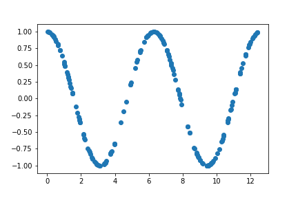
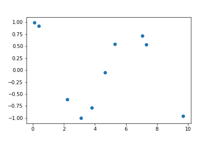
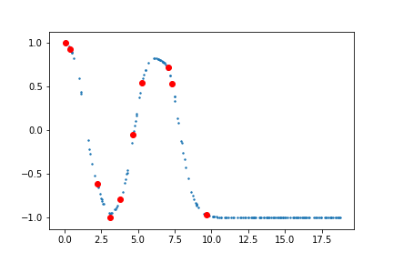
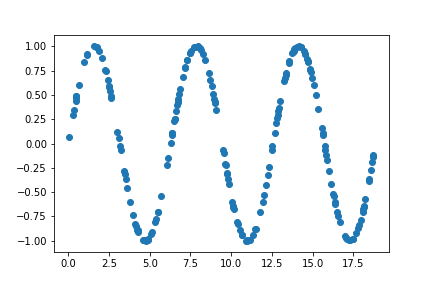
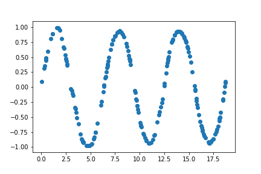
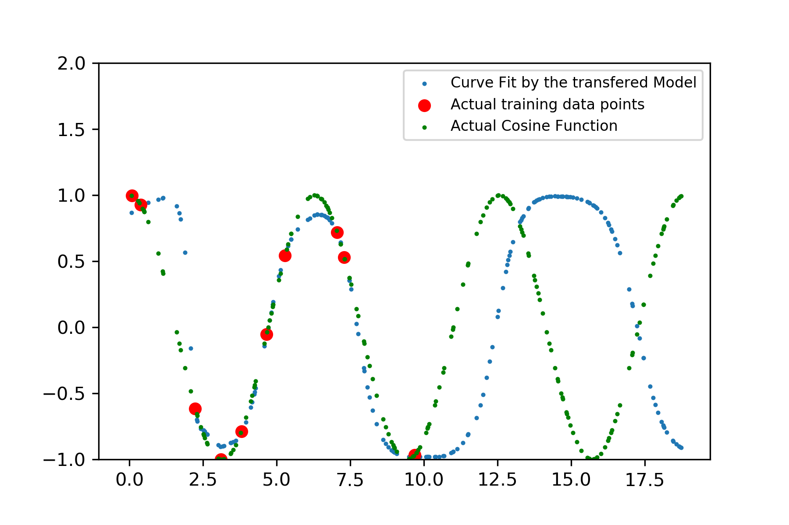
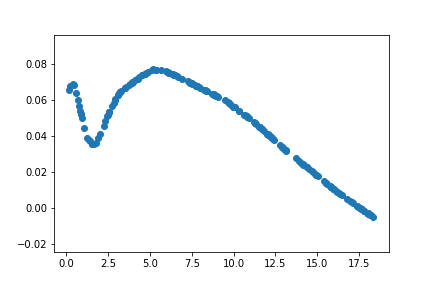

Some of us are really excited about the prospect of learning a new language. Unlike in regular language classes, we begin with by learning the vocabulary. We ask for translations of real-world objects and day-to-day activities. We do not try to learn already known concepts, for example the concept tree. Instead, we learn the corresponding word used to represent the concept (tree). This is different from how children first learn a language. We need to teach them concepts and also the symbols to represent those concept in their language. This is what Transfer Learning is all about. Transfer Learning is using knowledge gained from one task to solve a related task.
Definition:
Now, let me quote the Wikipedia definition for Transfer Learning,
Transfer learning is a research problem in machine learning that focuses on storing knowledge gained while solving one problem and applying it to a different but related problem. For example, knowledge gained while learning to recognise cars could apply when trying to recognise trucks. This area of research bears some relation to the long history of psychological literature on transfer of learning, although formal ties between the two fields are limited.
In the field of Natural Language Processing (NLP), transfer learning can take the form of multi-task learning or multilingual learning. Multi-task learning refers to using knowledge from one task to improve performance in a related task in the same language. For example, sentiment analysis helping emotion analysis. Similarly, multilingual learning refers to using knowledge from a task in one language to improve performance in a related task in another language language. Usually in multilingual learning, we focus on the case where the tasks are the same in both the languages.
In this post, I won’t be going into the details of Transfer Learning. Sebastian Ruder’s blog post on Transfer Learning summarizes transfer learning. I will be motivating transfer learning from a slightly different perspective.
Transfer Learning: A Strong Prior Distribution Over Models
Zoph et.al 2016 quotes in his paper titled Transfer Learning for Low-Resource Neural Machine Translation:
A justification for this approach is that in scenarios where we have limited training data, we need a strong prior distribution over models. The parent model trained on a large amount of bilingual data can be considered an anchor point, the peak of our prior distribution in model space. When we train the child model initialised with the parent model, we fix parameters likely to be useful across tasks so that they will not be changed during child-model training.
Supervised Learning as Curve Fitting
The goal of supervised learning can be thought of as fitting a curve (function) given some data points i.e., $y = f(x)$. Learn the function $f$, given input values $x$ and corresponding output values $y$. If we had $y$ for every point in the input space, we can fit the curve exactly. This is not the case in real-life scenarios. We usually get to collect a subset of measurements $y$ for some sample of points $x$ in the input space. The measurements $y$ obtained might be noisy. As a consequence, there are many possible functions which can fit the data well. The problem reduces to search, where the goal is to find a function which fits the data.
There are situations, where we rarely get to collect observations. The collected observations may not be indicative of the actual function to be learnt. Supervised learning fails badly in these cases. If we have a related task with abundant data points, we can train the supervised model on this auxiliary task. Now when we fine-tune the auxiliary task model on the actual task data, the model is already restricted in the function space. The search now proceeds to find a suitable function to fit the actual task data in the neighbourhood.
Fitting a Cosine Function
Let us demonstrate this intuition with a toy example. Consider the task of fitting a Cosine function. We will use a deep feed-forward neural network for this purpose. We will first generate a set of data points and plot the curve.
# We will generate 200 random points from 0 to 720
X = np.random.randint(720, size=(200,1))
# Convert the values to radians
X_rad = X * np.pi / 180
# Get the corresponding cosine values for the inputs
Y = np.cos(X_rad)
The following figure plots the generated data points

X_small = X_rad[:20]
Y_small = Y[:20]
The reduced set of data points leads to the following plot

class CurveFitter(nn.Module):
def __init__(self, inputDim, outDim, hidDim):
super(CurveFitter, self).__init__()
self.inputDim = inputDim
self.outDim = outDim
self.hidDim = hidDim
self.linear_l1 = nn.Linear(self.inputDim, self.hidDim)
self.nla_l1 = nn.ReLU()
self.linear_l2 = nn.Linear(self.hidDim, self.hidDim)
self.nla_l2 = nn.ReLU()
self.linear_l3 = nn.Linear(self.hidDim, self.hidDim)
self.nla_l3 = nn.ReLU()
self.linear_l4 = nn.Linear(self.hidDim, self.outDim)
self.nla_l4 = nn.Tanh()
self.mse_loss = nn.MSELoss()
def forward(self, x):
result = self.nla_l4( self.linear_l4( self.nla_l3( self.linear_l3( self.nla_l2( self.linear_l2( self.nla_l1( self.linear_l1(x) ) ) ) ) ) ) )
return result
def loss(self, x, y):
result = self.nla_l4( self.linear_l4( self.nla_l3( self.linear_l3( self.nla_l2( self.linear_l2( self.nla_l1( self.linear_l1(x) ) ) ) ) ) ) )
return self.mse_loss(result, y)
Let us instantiate the model and use Adam optimizer to train the model.
torch.manual_seed(9899999)
network_cos = CurveFitter(1, 1, 200 )
optim_alg_cos = Adam(network_cos.parameters(), lr=0.001)
Training the above model on the smaller set of points leads to the following curve

As observed, the model does well in areas where sufficient data is present. However, on the rightmost region where we have only one data point the model does poorly on fitting the curve.
Transferring Knowledge from Sine Function
Let us assume, that we have enough data points to train a Sine function. We will train the model using the earlier architecture. Unlike earlier, we will generate points from 0 to 1080 instead of 0 to 720.
# We will generate 200 random points from 0 to 720
X = np.random.randint(1080, size=(200,1))
# Convert the values to radians
X_rad = X * np.pi / 180
# Get the corresponding cosine values for the inputs
Y = np.sin(X_rad)
The training points for sine function is
  
Unlike the cosine model trained on smaller set of points, the fine-tuned cosine model does a reasonably decent job of mimicking the cosine function. The model also does a reasonable job outside of the domain. This is what I believe Zoph et.al 2016 meant when they said that the parent model enforces a prior distribution on the function space, allowing the model to learn a function close-enough to the function to be fitted. Unlike random initializations where the possible function space is very large.
Initialization
Also, the initialization of the deep learning model plays a crucial role. For different randomly initializations, model before training on the data fits the following curves

The benefits might not be apparent in the toy example chosen. However, for very complex non-linear functions the benefits from transfer learning becomes clearer.
References
- Barret Zoph, Deniz Yuret, Jonathan May, and Kevin Knight. Transfer Learning for Low-Resource Neural Machine Translation. In Proceedings of the 2016 Conference on Empirical Methods in Natural Language Processing, EMNLP 2016.